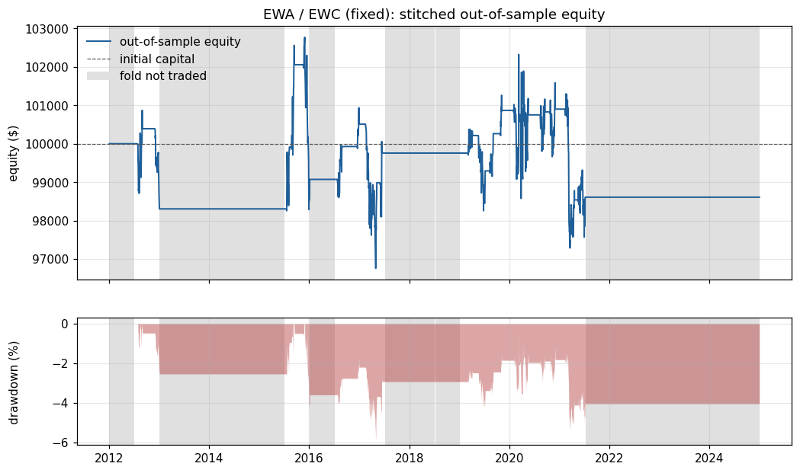
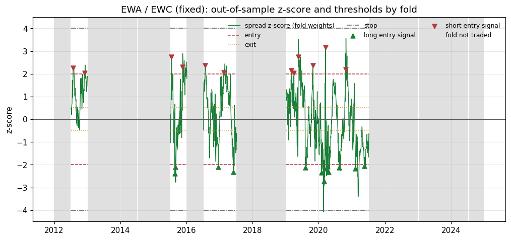
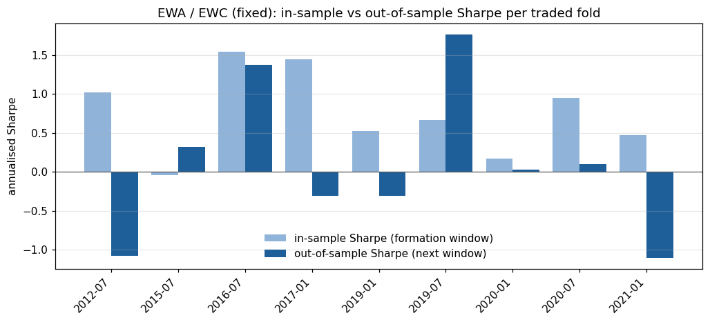

EWA / EWC: walk-forward fixed run
Out-of-sample Sharpe -0.02 (95% block-bootstrap interval -0.41 to 0.35), probabilistic Sharpe ratio 0.465. The result is not statistically distinguishable from zero skill at the 95% level. Only 25 closed round trips, so per-trade statistics are imprecise.
Headline statistics (out-of-sample only)
| Out-of-sample period | 2012-01-03 to 2024-12-31 (3269 days) |
|---|---|
| Total return | -1.39% |
| CAGR | -0.11% |
| Annualised volatility | 2.80% |
| Sharpe (95% bootstrap interval) | -0.02 (-0.41 to 0.35) |
| Probabilistic Sharpe ratio | 0.465 |
| Sortino | -0.04 |
| Max drawdown (longest spell, days) | -5.85% (2286) |
| Calmar | -0.02 |
| Skewness / kurtosis of daily returns | 2.27 / 90.83 |
| Folds traded | 9 of 26 |
|---|---|
| Skipped: not cointegrated / half-life / no in-sample edge | 17 / 0 / 0 |
| Closed round trips | 25 |
| Win rate (per round trip) | 68.0% |
| Profit factor | 0.89 |
| Average trade return on equity | -0.048% |
| Average holding period | 18.0 days |
| Stop-loss exits | 1 |
| Time in market | 13.8% |
| Annual turnover (x equity) | 3.9 |
| Trading costs / borrow costs ($) | 2,522.95 / 491.56 |
Charts



Folds
| Fold | Trading window | Trace stat / 5% crit | Half-life (days) | Status | Entry / exit / stop / lookback | In-sample Sharpe | In-sample deflated Sharpe | OOS return | OOS Sharpe | OOS trades |
|---|---|---|---|---|---|---|---|---|---|---|
| 0 | 2012-01-03 to 2012-07-02 | 11.48 / 15.49 | 17.8 | not cointegrated (trace 11.48 <= critical 15.49) | n/a | n/a | 0.00% | n/a | 0 | |
| 1 | 2012-07-03 to 2013-01-03 | 17.59 / 15.49 | 11.5 | traded | 2.00 / 0.50 / 4.00 / 60 | 1.02 | 0.930 | -1.70% | -1.08 | 2 |
| 2 | 2013-01-04 to 2013-07-05 | 7.39 / 15.49 | 24.0 | not cointegrated (trace 7.39 <= critical 15.49) | n/a | n/a | 0.00% | n/a | 0 | |
| 3 | 2013-07-08 to 2014-01-03 | 15.23 / 15.49 | 16.6 | not cointegrated (trace 15.23 <= critical 15.49) | n/a | n/a | 0.00% | n/a | 0 | |
| 4 | 2014-01-06 to 2014-07-07 | 8.80 / 15.49 | 27.3 | not cointegrated (trace 8.80 <= critical 15.49) | n/a | n/a | 0.00% | n/a | 0 | |
| 5 | 2014-07-08 to 2015-01-05 | 5.95 / 15.49 | 46.5 | not cointegrated (trace 5.95 <= critical 15.49) | n/a | n/a | 0.00% | n/a | 0 | |
| 6 | 2015-01-06 to 2015-07-07 | 9.12 / 15.49 | 42.2 | not cointegrated (trace 9.12 <= critical 15.49) | n/a | n/a | 0.00% | n/a | 0 | |
| 7 | 2015-07-08 to 2016-01-05 | 21.41 / 15.49 | 21.4 | traded | 2.00 / 0.50 / 4.00 / 60 | -0.04 | 0.477 | 0.78% | 0.31 | 4 |
| 8 | 2016-01-06 to 2016-07-06 | 12.44 / 15.49 | 17.6 | not cointegrated (trace 12.44 <= critical 15.49) | n/a | n/a | 0.00% | n/a | 0 | |
| 9 | 2016-07-07 to 2017-01-04 | 18.42 / 15.49 | 10.8 | traded | 2.00 / 0.50 / 4.00 / 60 | 1.54 | 0.988 | 1.45% | 1.38 | 2 |
| 10 | 2017-01-05 to 2017-07-06 | 18.73 / 15.49 | 10.1 | traded | 2.00 / 0.50 / 4.00 / 60 | 1.44 | 0.983 | -0.75% | -0.31 | 2 |
| 11 | 2017-07-07 to 2018-01-04 | 11.63 / 15.49 | 17.0 | not cointegrated (trace 11.63 <= critical 15.49) | n/a | n/a | 0.00% | n/a | 0 | |
| 12 | 2018-01-05 to 2018-07-06 | 14.75 / 15.49 | 16.7 | not cointegrated (trace 14.75 <= critical 15.49) | n/a | n/a | 0.00% | n/a | 0 | |
| 13 | 2018-07-09 to 2019-01-07 | 13.58 / 15.49 | 18.0 | not cointegrated (trace 13.58 <= critical 15.49) | n/a | n/a | 0.00% | n/a | 0 | |
| 14 | 2019-01-08 to 2019-07-09 | 19.03 / 15.49 | 11.4 | traded | 2.00 / 0.50 / 4.00 / 60 | 0.52 | 0.775 | -0.46% | -0.31 | 3 |
| 15 | 2019-07-10 to 2020-01-07 | 16.22 / 15.49 | 13.1 | traded | 2.00 / 0.50 / 4.00 / 60 | 0.67 | 0.830 | 1.59% | 1.76 | 2 |
| 16 | 2020-01-08 to 2020-07-08 | 16.60 / 15.49 | 11.6 | traded | 2.00 / 0.50 / 4.00 / 60 | 0.17 | 0.592 | -0.12% | 0.02 | 6 |
| 17 | 2020-07-09 to 2021-01-06 | 18.36 / 15.49 | 7.8 | traded | 2.00 / 0.50 / 4.00 / 60 | 0.94 | 0.927 | 0.15% | 0.10 | 2 |
| 18 | 2021-01-07 to 2021-07-08 | 22.04 / 15.49 | 7.9 | traded | 2.00 / 0.50 / 4.00 / 60 | 0.47 | 0.740 | -2.27% | -1.10 | 2 |
| 19 | 2021-07-09 to 2022-01-05 | 5.88 / 15.49 | 12.8 | not cointegrated (trace 5.88 <= critical 15.49) | n/a | n/a | 0.00% | n/a | 0 | |
| 20 | 2022-01-06 to 2022-07-08 | 3.71 / 15.49 | 17.0 | not cointegrated (trace 3.71 <= critical 15.49) | n/a | n/a | 0.00% | n/a | 0 | |
| 21 | 2022-07-11 to 2023-01-06 | 10.17 / 15.49 | 87.8 | not cointegrated (trace 10.17 <= critical 15.49) | n/a | n/a | 0.00% | n/a | 0 | |
| 22 | 2023-01-09 to 2023-07-11 | 12.09 / 15.49 | 26.3 | not cointegrated (trace 12.09 <= critical 15.49) | n/a | n/a | 0.00% | n/a | 0 | |
| 23 | 2023-07-12 to 2024-01-09 | 12.07 / 15.49 | 25.2 | not cointegrated (trace 12.07 <= critical 15.49) | n/a | n/a | 0.00% | n/a | 0 | |
| 24 | 2024-01-10 to 2024-07-11 | 12.58 / 15.49 | 27.2 | not cointegrated (trace 12.58 <= critical 15.49) | n/a | n/a | 0.00% | n/a | 0 | |
| 25 | 2024-07-12 to 2024-12-31 | 12.39 / 15.49 | 17.5 | not cointegrated (trace 12.39 <= critical 15.49) | n/a | n/a | 0.00% | n/a | 0 |
Transaction-cost sensitivity
Fold decisions (weights, parameters, signals) are frozen; only the per-side cost changes.
| Cost (bps per side) | Total return | Sharpe | Max drawdown |
|---|---|---|---|
| 0.0 | 1.13% | 0.04 | -5.57% |
| 5.0 | -1.39% | -0.02 | -5.85% |
| 10.0 | -3.85% | -0.09 | -7.04% |
| 20.0 | -8.59% | -0.23 | -10.47% |
Daily VaR and Expected Shortfall
| Method | Confidence | VaR | Expected shortfall |
|---|---|---|---|
| historical | 95% | 0.136% | 0.419% |
| parametric | 95% | 0.290% | 0.364% |
| cornish_fisher | 95% | -0.153% | n/a |
| historical | 99% | 0.557% | 0.860% |
| parametric | 99% | 0.410% | 0.470% |
| cornish_fisher | 99% | 3.393% | n/a |
Data provenance
| Source this run | snapshot |
|---|---|
| Snapshot file | data/snapshots/EWA_EWC_2010-01-01_2025-01-01.csv |
| Snapshot SHA-256 | b6b4343108d54f7724f01ff4a4cc61bb6c579879922d4503e7dff9f064aa9edf |
| Rows / first date / last date | 3774 / 2010-01-04 / 2024-12-31 |
| Dates dropped while aligning tickers | 0 |
| Downloaded (UTC) | 2026-09-11T19:17:13+00:00 |
| Daily moves above 40% (log) flagged | 0 |
Protocol
| path | config/config.yaml |
|---|---|
| sha256 | 23f85374f30bb0c83cd9b876dd88aa8d41da9055559d08ce09ebe1dd0100ae7a |
| data.snapshot_dir | data/snapshots |
| data.max_missing_fraction | 0.02 |
| walk_forward.formation_days | 504 |
| walk_forward.trading_days | 126 |
| walk_forward.significance | 0.05 |
| walk_forward.det_order | 0 |
| walk_forward.k_ar_diff | 1 |
| walk_forward.require_cointegration | True |
| walk_forward.max_half_life_days | 126 |
| strategy.entry_z | 2.0 |
| strategy.exit_z | 0.5 |
| strategy.stop_z | 4.0 |
| strategy.lookback | 60 |
| backtest.initial_capital | 100000 |
| backtest.gross_exposure | 1.0 |
| backtest.cost_bps | 5.0 |
| backtest.borrow_bps_annual | 50.0 |
| backtest.execution_lag | 1 |
| optimization.space.entry_z | 1.0, 3.0 |
| optimization.space.exit_fraction | 0.0, 0.8 |
| optimization.space.stop_offset | 0.5, 3.0 |
| optimization.space.lookback | 20, 252 |
| optimization.n_calls | 40 |
| optimization.n_initial_points | 12 |
| optimization.min_trades | 3 |
| optimization.random_state | 42 |
| reporting.cost_sensitivity_bps | 0.0, 5.0, 10.0, 20.0 |
| reporting.bootstrap_samples | 2000 |
| reporting.bootstrap_block | 20 |
| reporting.seed | 7 |
Trades
| Signal | Entry | Exit | Direction | Exit reason | Bars held | Net P&L ($) | Return on equity | Fold |
|---|---|---|---|---|---|---|---|---|
| 2012-07-27 | 2012-07-30 | 2012-08-31 | short spread | exit | 24 | 391.52 | 0.392% | 1 |
| 2012-11-30 | 2012-12-03 | 2013-01-03 | short spread | end_of_window | 21 | -2,087.03 | -2.079% | 1 |
| 2015-07-20 | 2015-07-21 | 2015-08-10 | short spread | exit | 14 | 1,608.14 | 1.636% | 7 |
| 2015-08-24 | 2015-08-25 | 2015-08-26 | long spread | exit | 1 | 302.64 | 0.303% | 7 |
| 2015-08-31 | 2015-09-01 | 2015-09-15 | long spread | exit | 9 | 1,842.02 | 1.838% | 7 |
| 2015-11-19 | 2015-11-20 | 2016-01-05 | short spread | end_of_window | 29 | -2,985.11 | -2.925% | 7 |
| 2016-07-25 | 2016-07-26 | 2016-08-29 | short spread | exit | 24 | 855.59 | 0.864% | 9 |
| 2016-12-16 | 2016-12-19 | 2016-12-30 | long spread | exit | 8 | 582.00 | 0.582% | 9 |
| 2017-02-15 | 2017-02-16 | 2017-05-09 | short spread | exit | 56 | -1,523.53 | -1.516% | 10 |
| 2017-06-01 | 2017-06-02 | 2017-06-15 | long spread | exit | 9 | 770.22 | 0.778% | 10 |
| 2019-03-06 | 2019-03-07 | 2019-03-28 | short spread | exit | 15 | 207.61 | 0.208% | 14 |
| 2019-04-03 | 2019-04-04 | 2019-04-08 | short spread | exit | 2 | 248.99 | 0.249% | 14 |
| 2019-05-20 | 2019-05-21 | 2019-07-09 | short spread | end_of_window | 33 | -919.45 | -0.917% | 14 |
| 2019-08-09 | 2019-08-12 | 2019-09-06 | long spread | exit | 18 | 968.76 | 0.976% | 15 |
| 2019-10-28 | 2019-10-29 | 2019-11-07 | short spread | exit | 7 | 605.64 | 0.604% | 15 |
| 2020-01-31 | 2020-02-03 | 2020-02-25 | long spread | stop | 15 | -1,452.64 | -1.440% | 16 |
| 2020-02-28 | 2020-03-02 | 2020-03-11 | long spread | exit | 7 | 1,216.94 | 1.224% | 16 |
| 2020-03-17 | 2020-03-18 | 2020-03-19 | short spread | exit | 1 | 124.73 | 0.124% | 16 |
| 2020-03-20 | 2020-03-23 | 2020-03-31 | long spread | exit | 6 | -1,620.58 | -1.608% | 16 |
| 2020-04-07 | 2020-04-08 | 2020-04-15 | long spread | exit | 4 | 1,887.30 | 1.904% | 16 |
| 2020-04-21 | 2020-04-22 | 2020-05-19 | long spread | exit | 19 | -272.49 | -0.270% | 16 |
| 2020-08-13 | 2020-08-14 | 2020-09-17 | long spread | exit | 23 | 77.82 | 0.077% | 17 |
| 2020-10-23 | 2020-10-26 | 2020-12-01 | short spread | exit | 25 | 71.96 | 0.071% | 17 |
| 2021-02-10 | 2021-02-11 | 2021-04-21 | long spread | exit | 47 | -2,362.69 | -2.342% | 18 |
| 2021-05-18 | 2021-05-19 | 2021-07-08 | long spread | end_of_window | 34 | 70.11 | 0.071% | 18 |
Limitations
- Baskets were chosen by the researcher from companies that exist today, so selection and survivorship bias are not controlled.
- Prices are Yahoo Finance adjusted closes. Dividend adjustment rewrites history and Yahoo revises it over time; results are pinned to the SHA-256 of the price snapshot used.
- Fills happen at the next daily close with a flat cost per side. There are no bid-ask dynamics, market impact, short-sale restrictions or borrow recalls.
- Fractional shares, no margin interest, no rebate on short proceeds, and uninvested cash earns nothing.
- Weights are frozen within each trading window, so the dollar hedge drifts as prices move.
- With few round trips the point Sharpe ratio is noisy; the bootstrap interval and PSR are the relevant evidence, and neither accounts for how many baskets or protocols a researcher tried.